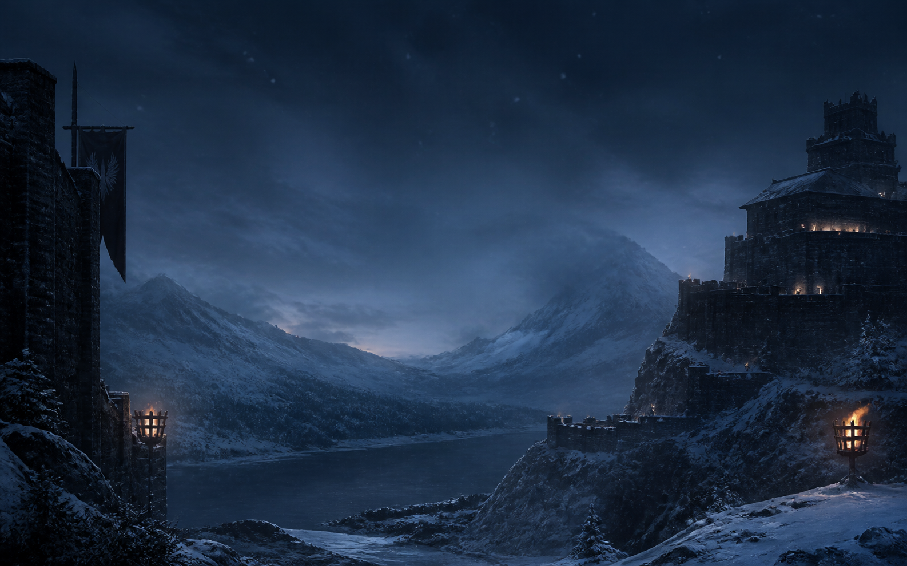
NORTH · COLD OPEN
Snowglass Citadel
Cool blue-hour contrast with an open center for a hero title and CTA.
Visual direction gallery · 13 generated assets · 4 UI treatments
A curated shelf of high-resolution wallpapers, full-head character busts, raised-metal sigils, and UI treatments. These are deliberately isolated from the production site so you can compare directions before we implement anything.
01 · Atmosphere
Best for page-level heroes, route backgrounds, and immersive landing states.

Cool blue-hour contrast with an open center for a hero title and CTA.
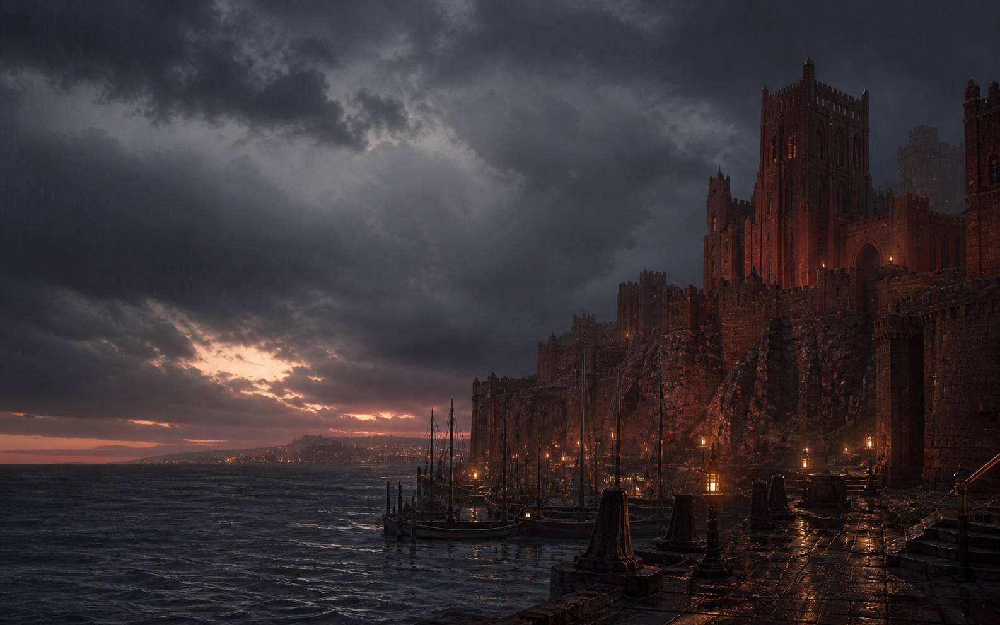
Ember-lit red stone gives Houses and political history a warmer register.
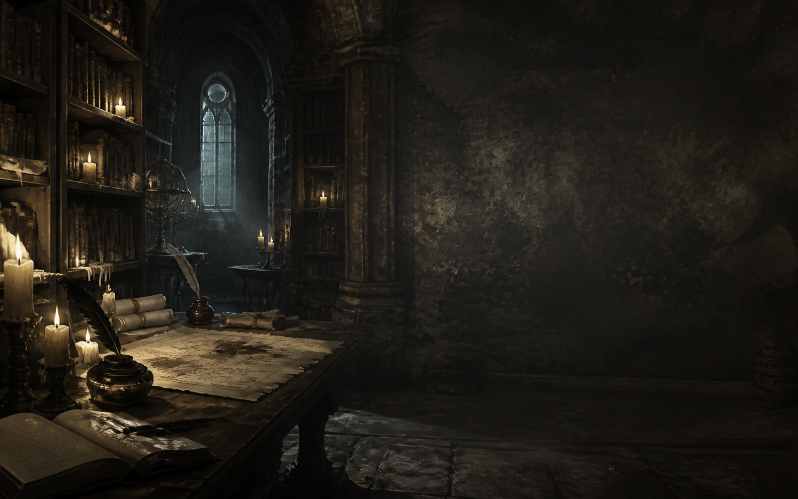
Strong right-side negative space for search, filters, and lore copy.
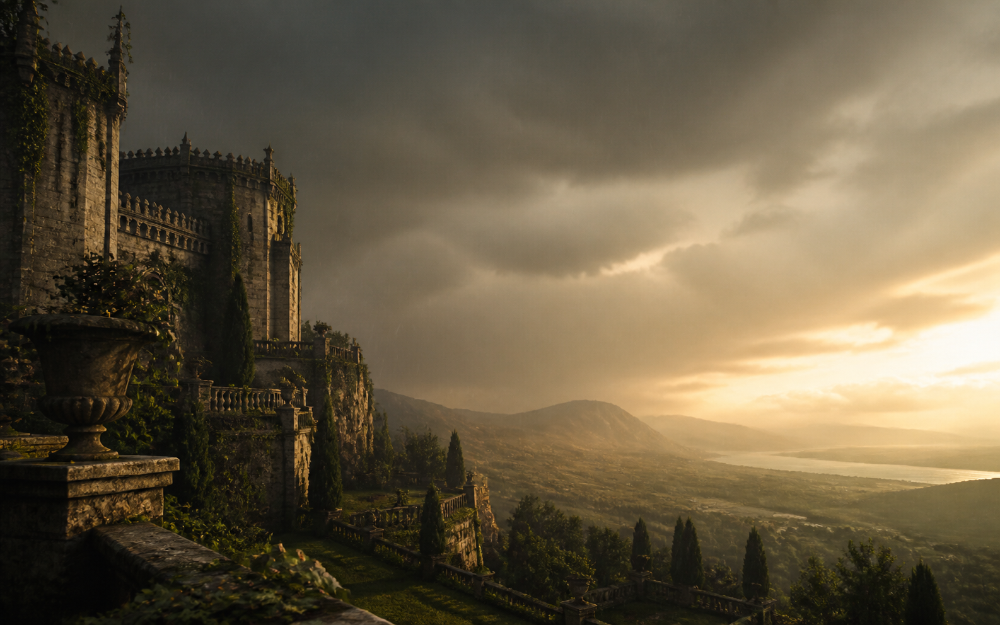
A lighter seasonal counterpoint for houses, alliances, and character stories.
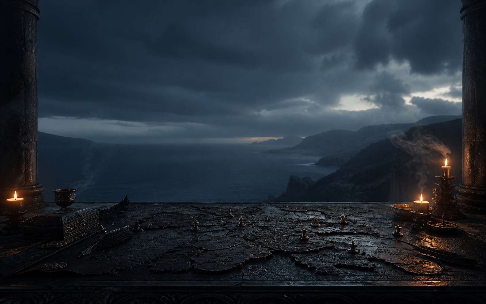
Built for Maps and Battles: tactile markers, smoke, and a clear upper text zone.
02 · Presence
Full head and shoulders are intentionally preserved for realm-side panels and profile introductions.
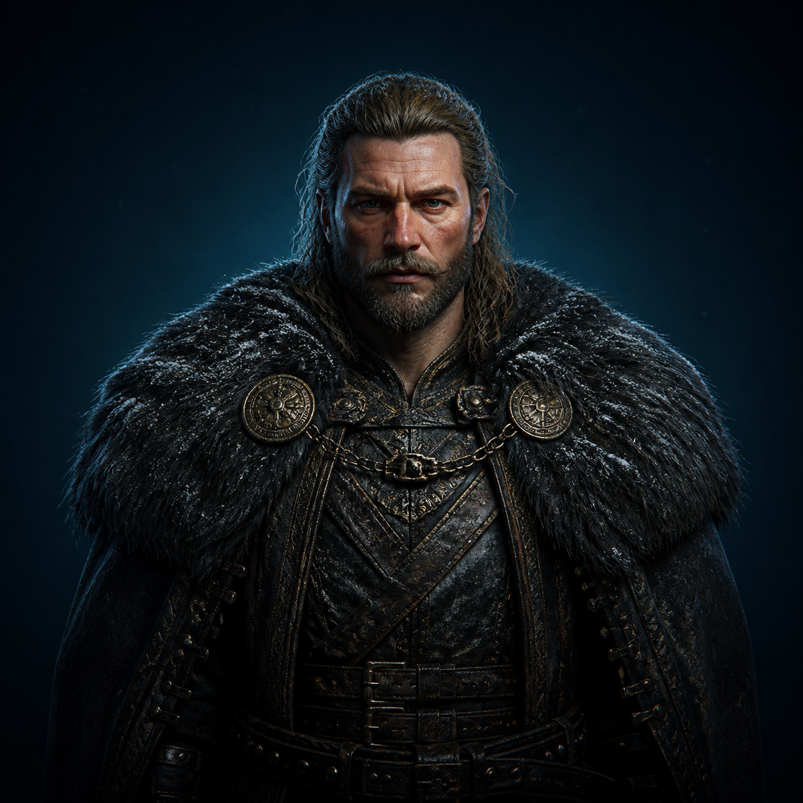
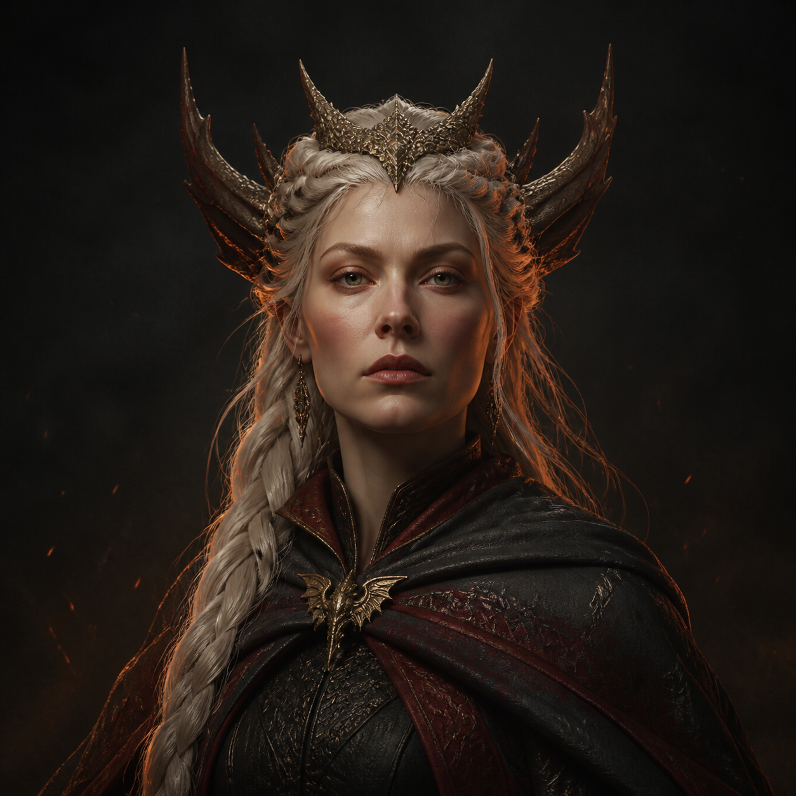
03 · Heraldry
The crop-safe medallion treatment removes the visible black ring problem and gives every emblem one material language.
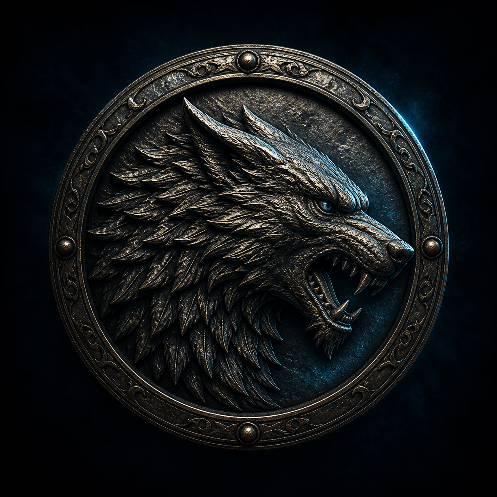
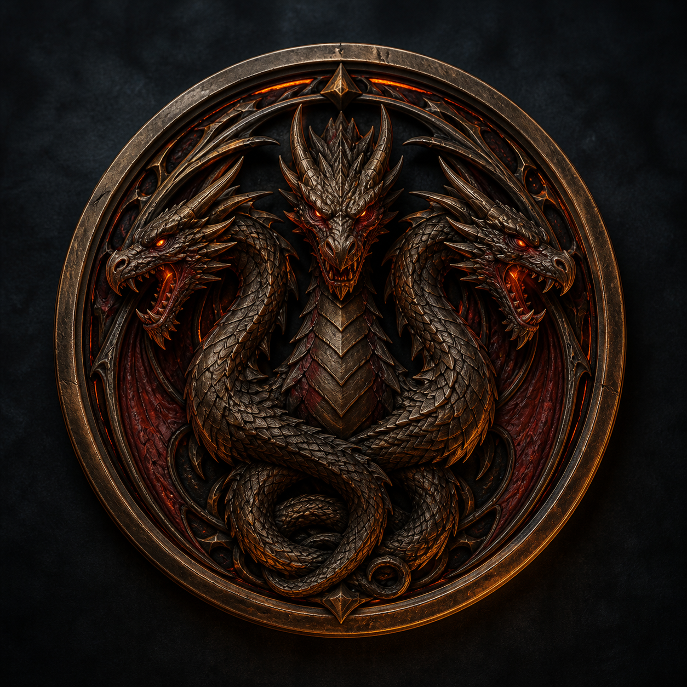
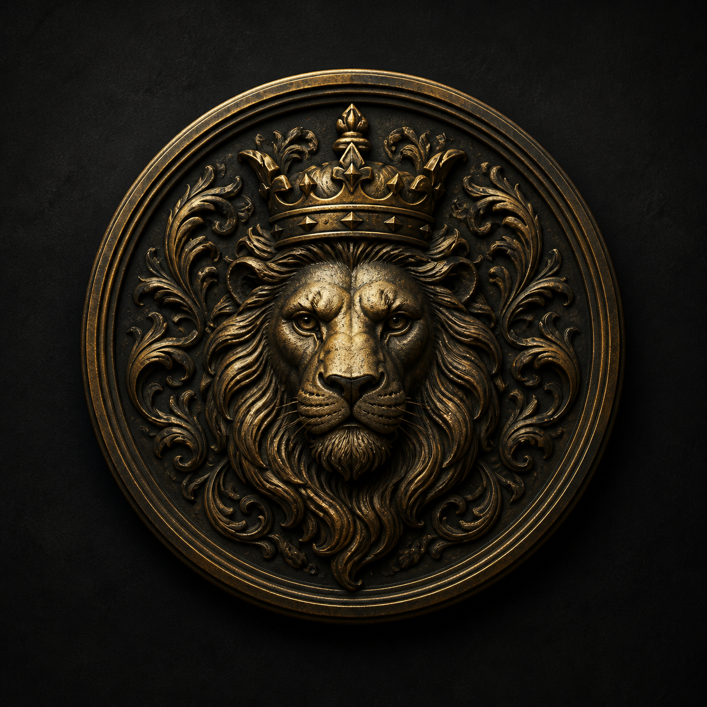
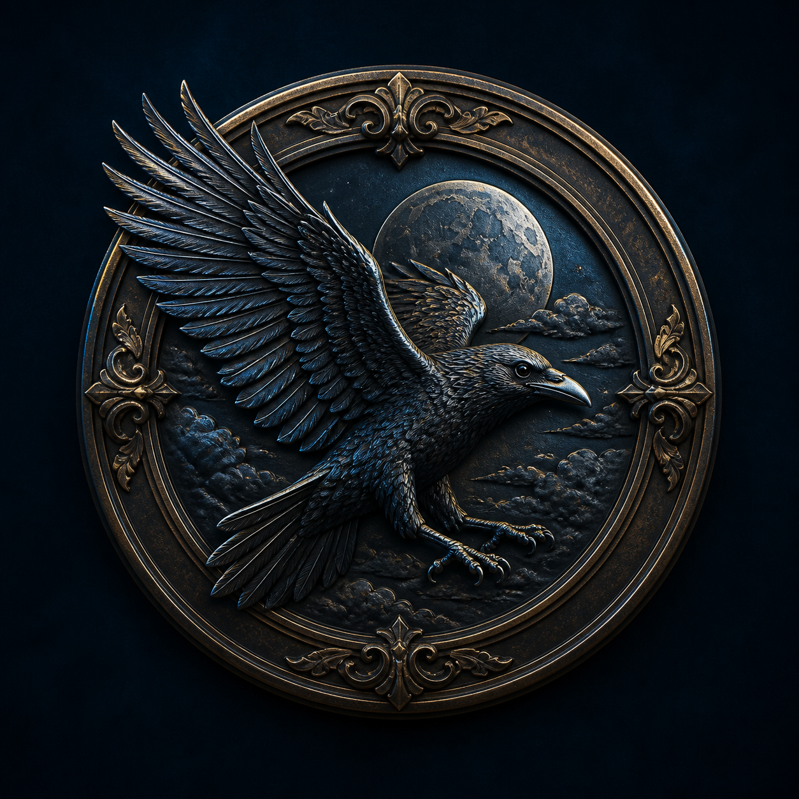
04 · Interface language
These are CSS treatment directions, not live controls. We can apply one system consistently across Houses, History, Chronicles, Maps, and Lore.
A parchment inset works for quotes, lore excerpts, and timeline annotations. Use sparingly against dark imagery.
Dark glass keeps search and filter controls visually attached to the page instead of floating as a generic app card.
Bronze hairlines, a small eyebrow, and a large serif statement create the old-world hierarchy the current cards are missing.
Layered 3D labels can name regions on Maps without turning them into floating pills.
05 · Small signals
Useful for playful empty states and teaching moments; production navigation should still use accessible icon assets.